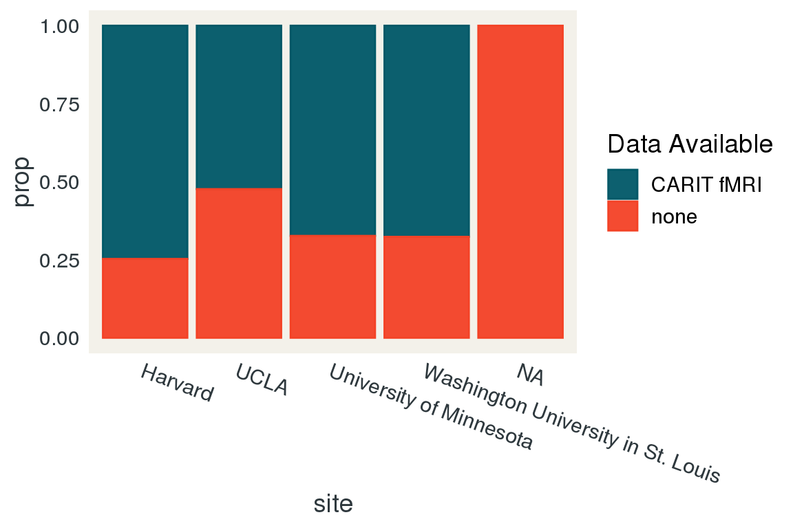
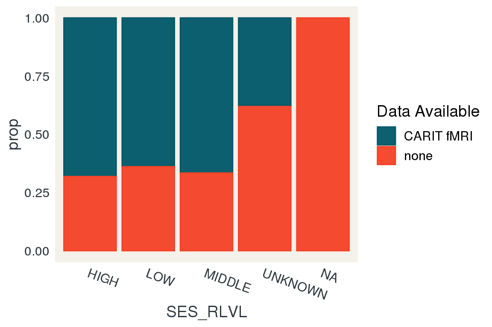
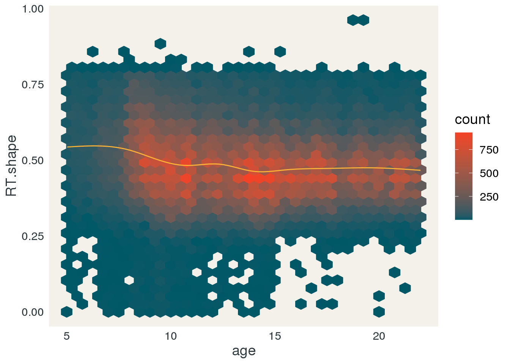
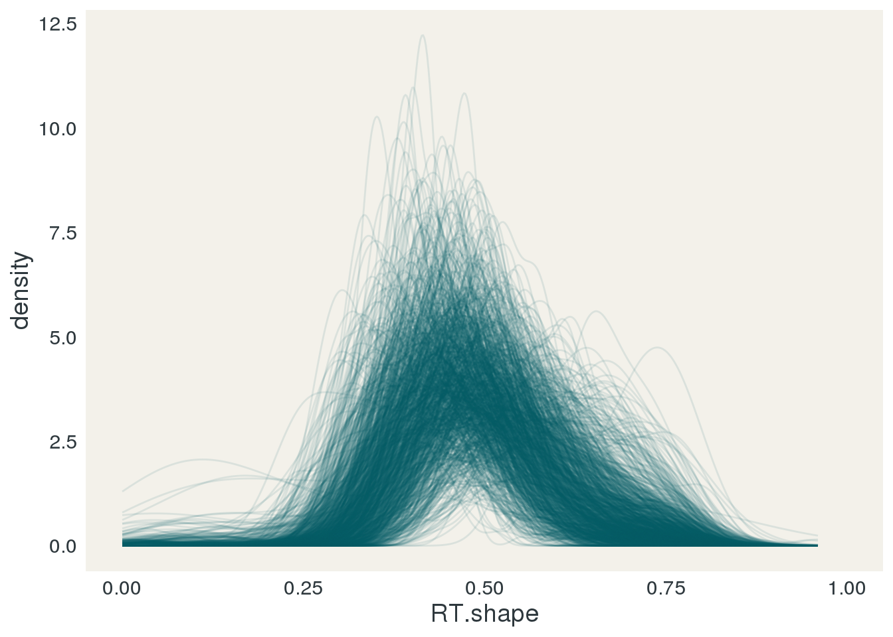
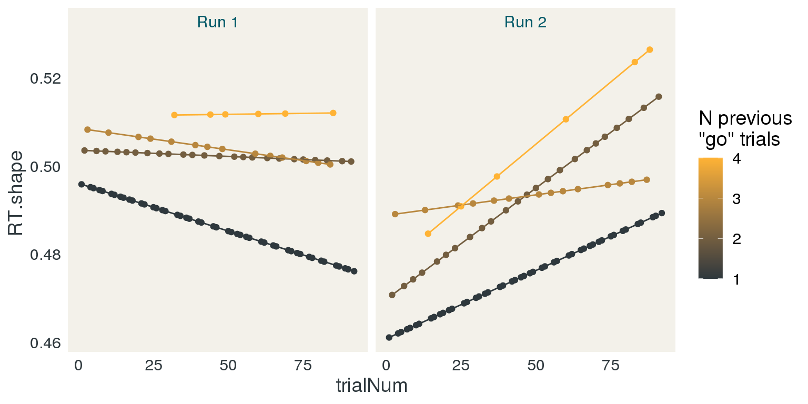

CARIT Report
John Flournoy
2021-01-29
Process data
library(data.table)
library(psycho)
data.table::setDTthreads(3)
modal <- function(x){
t <- table(unlist(x))
n <- dimnames(t)[[1]]
return(n[which(t == max(t))])
}
read_carit_dir <- function(data_path, pattern = "*CARIT.*run[12]_wide.csv"){
#List all of the CARIT task files in the data directory
fnames <- dir(data_path,
pattern = pattern,
recursive = TRUE,
full.names = TRUE)
names(fnames) <- 1:length(fnames)
#Set the column names we want from each csv file
col_select <- c('condFile', 'trialNum', 'stim',
'corrAns', 'prepotency', 'ISI',
'shapeStartTime', 'shapeEndTime',
'fixStartTime','fixEndTime',
'nogoCondition','resp',
'trialResp.firstKey', 'trialResp.firstRt',
'corrRespMsg', 'corrRespCode',
'corrRespTrialType','isiPress.keys',
'isiPress.rt', 'hitCount', 'missCount',
'falseAlarmCount', 'corrRejectCount',
'totalAcc', 'goAcc', 'nogoAcc',
'goFiveBackAvg', 'nogoFiveBackAvg',
'totalFiveBackAvg')
#create a temporary data frame of all the data from all the csv files
adf <- data.table::rbindlist(
lapply(fnames, function(f){
#remove the first 4 rows of each data frame.
data.table::fread(f, select = col_select)[-(1:4),]
}),
idcol = TRUE)
#combine information about the files with the temporary data frame.
d <- data.table(.id = names(fnames),
filename = fnames,
sessionID = gsub('.*(HCD[A-Za-z0-9]+_V[0-9]_[A|B|X]).*', '\\1', fnames),
sID = gsub('.*(HCD[A-Za-z0-9]+)_V[0-9]_[A|B|X].*', '\\1', fnames))[adf, on = '.id']
return(d)
}
workspace_fname <- 'process_carit.rda'
if(!file.exists(workspace_fname)){
data_path <- '/ncf/hcp/data/CCF_HCD_STG_PsychoPy_files/'
intake_data_path <- '/ncf/hcp/data/intradb_intake/'
d <- read_carit_dir(data_path)
d_intake <- read_carit_dir(intake_data_path)
#remove long
readr::write_csv(d, 'CARIT_allRaw.csv')
demos <- data.table::fread('HCPD_COMBINED20200608.csv',
select = c('id', 'age', 'gender', 'site', 'RACE', 'SES_PLVL', 'SES_RLVL', 'income'))
staged <- data.table::fread('ccf_hcd_stg_2020-06-09.csv',
select = 'Subject')
public_release <- data.table::fread('HCD_V1_Release_Struct+fMRI_Merged_Adj.txt', header = FALSE, col.names = 'sID')
long <- data.table::fread('HCPD_LONGITUDINAL20200608.csv',
select = c('id', 'LONG_AGE'))
staged_dlmri <- data.table(sessionID = dir('/ncf/hcp/data/intradb_multiprocfix/', pattern = "HCD.*"))
staged_dlmri[, 'has_task_scan'] <- unlist(lapply(staged_dlmri$sessionID, function(sess){
length(dir(file.path('/ncf/hcp/data/intradb_multiprocfix/',
sess,
'/MultiRunIcaFix_proc/',
sess,
'/MNINonLinear/Results/'), pattern = 'tfMRI.*')) > 0
}))
staged_dlmri[, 'has_carit'] <- unlist(lapply(staged_dlmri$sessionID, function(sess){
length(dir(file.path('/ncf/hcp/data/intradb_multiprocfix/',
sess,
'/MultiRunIcaFix_proc/',
sess,
'/MNINonLinear/Results/'), pattern = 'tfMRI_CARIT.*')) > 0
}))
staged_dlmri[, 'has_guessing'] <- unlist(lapply(staged_dlmri$sessionID, function(sess){
length(dir(file.path('/ncf/hcp/data/intradb_multiprocfix/',
sess,
'/MultiRunIcaFix_proc/',
sess,
'/MNINonLinear/Results/'), pattern = 'tfMRI_GUESSING.*')) > 0
}))
staged_dlmri[, sID := gsub('.*(HCD[A-Za-z0-9]+)_V1_MR.*', '\\1', sessionID)]
setnames(demos, 'id', 'sID')
setnames(staged, 'Subject', 'sID')
setnames(long, 'id', 'sID')
#Some columns should be factors
factor_vars <- c('sessionID',
'stim',
'corrAns',
'prepotency',
'nogoCondition',
'resp',
'trialResp.firstKey',
'corrRespMsg',
'corrRespTrialType')
d[, (factor_vars) := lapply(.SD, as.factor), .SDcols = factor_vars]
d_intake[, (factor_vars) := lapply(.SD, as.factor), .SDcols = factor_vars]
d_combined <- data.table::rbindlist(list(staged = d, intake = d_intake), idcol = "data_source")
#Integrate demographic variables
carit <- demos[d_combined, on = 'sID']
#use the condition file name to figure out the run number
setnames(carit, 'condFile', 'runN')
carit[, runN := as.numeric(gsub('.*/scan([12])\\.csv', '\\1', runN))]
#rename corrAns to trialType
setnames(carit, 'corrAns', 'trialType')
#relabel the nogo condtion to be more accurate
carit[, nogoCondition := factor(nogoCondition,levels=c("prevRewNogo","neutralNogo"),labels=c("prevRewNogo","prevLossNogo"))
]
#relabel the prepotency factor to be more clear
carit[, prepotency := factor(prepotency,levels=c("2","3","4"),labels=c("2go","3go","4go"))]
#aggTrialN is trial number across both runs
carit[, aggTrialN := trialNum + 92*(runN - 1)]
carit[, RT.shape := trialResp.firstRt - shapeStartTime]
carit_by_run_SDT <- dcast(carit[, .N, by = c('sID', 'runN', 'corrRespTrialType') ], ... ~ corrRespTrialType, value.var = 'N', fill = 0)
carit_by_run_SDT[, c('dprime', 'beta', 'aprime', 'bppd', 'c') := psycho::dprime(Hit, falseAlarm, Miss, corReject)]
readr::write_csv(carit,"CARIT_allSubs.csv")
readr::write_csv(carit_by_run_SDT,"CARIT_allSubs_dprime.csv")
save.image(file = workspace_fname)
} else {
load(workspace_fname)
}At the moment, there are 2 participants who have too many trials for one run. The raw data file indicates that the same conditions file was used for each one, but it also indicates that only 1 run was run. We may ultimately be able to use these cases but I'm setting them aside for now.
#remove longitudinal subjects:
carit <- carit[!grepl('_V[2-9]_', filename),]
###INVESTIGATE FURTHER
duplicate_run_ids <- unique(carit[, .N, by = c('sID', 'runN')][N > 92, sID])
print(duplicate_run_ids)## [1] "HCD0197045" "HCD0353538"dim(carit)## [1] 203035 43carit <- carit[!sID %in% duplicate_run_ids]
dim(carit)## [1] 202667 43Data cross-check
Total N with CARIT task behavior: 811.
Number of participants with CARIT task behavior but no demo info: 0.
Number of participants with demo info but no CARIT task behavior: 411.
Number of participants with CARIT task behavior but not staged: 0.
Number of participants staged but no CARIT task behavior: 12. These participants likely did not complete the task, though other data is relevant for staging.
Number of participants with task behavior not staged, recovered from intake project: 370
Number of intake participants with no demo info: 1. Participant ids: HCD0425133.
Number of participants not in either intake or staged CARIT behavior lists: 42.
List of those:
HCD0009422, HCD0123824, HCD0147838, HCD0156435, HCD0168442, HCD0191033, HCD0263335, HCD0412629, HCD0505333, HCD0577358, HCD0696265, HCD0874364, HCD1022015, HCD1045128, HCD1136232, HCD1179755, HCD1275347, HCD1406235, HCD1506037, HCD1529756, HCD1581455, HCD1690359, HCD1748768, HCD1790868, HCD1822249, HCD1876272, HCD1985378, HCD2059043, HCD2139748, HCD2162036, HCD2292453, HCD2442446, HCD2519556, HCD2572156, HCD2604749, HCD2779077, HCD2833259, HCD2867478, HCD2868985, HCD2891576, HCD2925769, HCD2944066
Spot check suggests these sessions may be missing some data for the task, or have other problems.
intradb_beh_only_list <- demos[!d, on = 'sID']
setnames(intradb_beh_only_list, 'sID', 'Subject')
readr::write_csv(intradb_beh_only_list, '~/code/intradb_sync/HCPD_behavior_only.csv')do.call(DT::datatable,
c(list(staged[!d, on = 'sID'],
caption = 'Pariticipants marked as staged, with no CARIT data.'),
dt_options))Number of participants with dl'd MRI but not in staging list: 0.
Number of participants in staging list without any dl'd MRI: 2.
Personal communication with Mike Hodge:
Sometimes when we find issues with the staging sessions after they’re built, we’ll remove the sessions so they’re not inadvertently released. We’ll often not remove the corresponding subject record because we’ll eventually rebuild that session. I’m sure that’s what happened here.
Number of participants with (any) dowloaded task MRI, but no CARIT task behavior: 5.
Number of participants with dowloaded CARIT task MRI, but no CARIT task behavior: 0.
Number of participants with CARIT task behavior, but no dowloaded task MRI (on this task): 4. This indicates that these participants had problems with their data in the multirun ica fix pipeline (it is possible that this session will eventually get rebuilt, it seems).
missing_task_mri <- unique(d[, c('sessionID', 'sID')])[!staged_dlmri[has_task_scan == TRUE], on = 'sID']
do.call(DT::datatable,
c(list(demos[missing_task_mri, on = 'sID'],
caption = 'Participants with CARIT task behavior, but no dowloaded task MRI (on this task).'),
dt_options))Public release
public_release[, PR := TRUE]
d_pr <- public_release[d_combined, on = 'sID']
d_pr[, PR := data.table::fifelse(PR, TRUE, FALSE, na = FALSE)]
d_pr <- d_pr[PR == TRUE]Not all staged participants are available for public release, and we've decided to use the public release data for this set of analyses.
Number of PR participants: 652
Number of PR participants with CARIT behavior: 652
Number of PR participants with CARIT task scan: 643
Check design
Public release and scan data
carit_pr_scan <- carit[public_release, on = 'sID', nomatch = 0]
carit_pr_scan <- staged_dlmri[carit_pr_scan, on = 'sID'][has_carit == TRUE]CARIT has two rounds of 92 trials each, for a total of 184 trials per subject.
Modal number of trials: 184.
Number of participants without modal number: 21.
#List participants without the modal number of trials
do.call(DT::datatable,
c(list(carit_pr_scan[, list(`N trials` = .N), by = 'sID'][`N trials` != as.numeric(modal(`N trials`))],
caption = 'Pariticipants without modal number of trials.'),
dt_options))Each round of the task has 68 go trials and 24 nogo trials. Each subject should have 136 go and 48 nogo trials
Number of participants with any deviation from this:
dcast(carit_pr_scan[, .N, keyby = c('sID', 'trialType')],
sID ~ trialType)[go != 136 | nogo != 48][, .N]## [1] 21Nogo trials should be equivalently distributed between prev reward and prev loss trials. Each subject should have 24 prevRew, 24 prevLoss.
Number of participants with any deviation from this:
dcast(carit_pr_scan[, .N, keyby = c('sID', 'nogoCondition')],
sID ~ nogoCondition)[prevRewNogo != 24 | prevLossNogo != 24][, .N]## [1] 21Go prepotency trials should number 20 for 2, 16 for 3, and 12 for 4.
Number of participants with any deviation from this:
dcast(carit_pr_scan[, .N, keyby = c('sID', 'prepotency')],
sID ~ prepotency)[`2go` != 20 |
`3go` != 16 |
`4go` != 12][, .N]## [1] 21These are all the same IDs who are missing one of the two runs.
identical(dcast(carit_pr_scan[, .N, keyby = c('sID', 'trialType')],
sID ~ trialType)[go != 136 | nogo != 48][, 'sID'],
dcast(carit_pr_scan[, .N, keyby = c('sID', 'nogoCondition')],
sID ~ nogoCondition)[prevRewNogo != 24 | prevLossNogo != 24][, 'sID'])## [1] TRUEidentical(dcast(carit_pr_scan[, .N, keyby = c('sID', 'nogoCondition')],
sID ~ nogoCondition)[prevRewNogo != 24 | prevLossNogo != 24][, 'sID'],
dcast(carit_pr_scan[, .N, keyby = c('sID', 'prepotency')],
sID ~ prepotency)[`2go` != 20 |
`3go` != 16 |
`4go` != 12][, 'sID'])## [1] TRUEFor all CARIT data
CARIT has two rounds of 92 trials each, for a total of 184 trials per subject.
Modal number of trials: 184.
Number of participants without modal number: 151.
#List participants without the modal number of trials
do.call(DT::datatable,
c(list(carit[, list(`N trials` = .N, data_source = unique(data_source)), by = 'sID'][`N trials` != as.numeric(modal(`N trials`))],
caption = 'Pariticipants without modal number of trials.'),
dt_options))Each round of the task has 68 go trials and 24 nogo trials. Each subject should have 136 go and 48 nogo trials
Number of participants with any deviation from this:
dcast(carit[, .N, keyby = c('sID', 'trialType')],
sID ~ trialType)[go != 136 | nogo != 48][, .N]## [1] 151Nogo trials should be equivalently distributed between prev reward and prev loss trials. Each subject should have 24 prevRew, 24 prevLoss.
Number of participants with any deviation from this:
dcast(carit[, .N, keyby = c('sID', 'nogoCondition')],
sID ~ nogoCondition)[prevRewNogo != 24 | prevLossNogo != 24][, .N]## [1] 153Go prepotency trials should number 20 for 2, 16 for 3, and 12 for 4.
Number of participants with any deviation from this:
dcast(carit[, .N, keyby = c('sID', 'prepotency')],
sID ~ prepotency)[`2go` != 20 |
`3go` != 16 |
`4go` != 12][, .N]## [1] 151Data availability
N participants with task behavior: 1178. N participants with any task fMRI: 814. N participants with CARIT fMRI: 807. N participants with Guessing fMRI: 813.
The following comparisons are based on the those with any CARIT task data whatsover, and those who have fMRI CARIT data.
Age
carit_behavior_ids <- unique(carit[, c('sID')])
carit_behavior_ids[, carit_behav := TRUE]
demos_and_data_avail <- merge(carit_behavior_ids, demos, on = 'sID', all = TRUE)
demos_and_data_avail <- merge(demos_and_data_avail, staged_dlmri, on = 'sID', all = TRUE)
avail_type <- function(behav, fmri){
r <- fifelse(fifelse(is.na(fmri), FALSE, fmri) &
fifelse(is.na(behav), FALSE, behav), 'CARIT fMRI', 'none')
return(r)
}
demos_and_data_avail[, `Data Available` := avail_type(carit_behav, has_carit)]
ggplot(demos_and_data_avail, aes(x = age)) +
geom_histogram(aes(group = `Data Available`, fill = `Data Available`, color = `Data Available`, y = ..count..),
position = position_dodge(),
alpha = .95,
binwidth = 1) +
scale_x_continuous(breaks = 1:25) +
scale_fill_manual(aesthetics = c('fill', 'color'), values = apal[c(1,5)]) +
jftheme
Age Prop.
agerange <- range(demos_and_data_avail$age, na.rm = TRUE)
breaks <- c(seq(floor(agerange[[1]]), ceiling(agerange[[2]]), 2), ceiling(agerange[[2]]))
breaks <- breaks[-(length(breaks) -1)]
values <- paste0('(', breaks[-length(breaks)], '-', breaks[-1],']')
demos_and_data_avail_age <- demos_and_data_avail
demos_and_data_avail_age[, age_bin := cut(floor(age), breaks = breaks, include.lowest = TRUE)]
demos_and_data_avail_age_prop <-
demos_and_data_avail_age[, .N,
by = c('age_bin', 'Data Available')][, prop := N / sum(N),
by = 'age_bin']
ggplot(demos_and_data_avail_age_prop, aes(x = age_bin)) +
geom_col(aes(group = `Data Available`, fill = `Data Available`, color = `Data Available`, y = prop),
position = position_stack(),
alpha = .95,
binwidth = 1) +
scale_fill_manual(aesthetics = c('fill', 'color'), values = apal[c(1,5)]) +
scale_x_discrete(na.translate = FALSE) +
labs(x = 'Age binned (years)', y = 'Proportion') +
jftheme +
theme(axis.text.x = element_text(size = 10))
PR Age Prop.
public_release[, `Data Available` := TRUE]
PR_data_avail <- merge(public_release, demos, on = 'sID', all = TRUE)
PR_data_avail[is.na(`Data Available`), `Data Available` := FALSE]
PR_data_avail[, `Data Available` := factor(`Data Available`, levels = c(TRUE, FALSE), labels = c('Yes', 'No'))]
agerange <- range(PR_data_avail$age)
breaks <- c(seq(floor(agerange[[1]]), ceiling(agerange[[2]]), 2), ceiling(agerange[[2]]))
breaks <- breaks[-(length(breaks) -1)]
values <- paste0('(', breaks[-length(breaks)], '-', breaks[-1],']')
PR_data_avail_age <- PR_data_avail
PR_data_avail_age[, age_bin := cut(floor(age), breaks = breaks, include.lowest = TRUE)]
PR_data_avail_age_prop <-
PR_data_avail_age[, .N,
by = c('age_bin', 'Data Available')][, prop := N / sum(N),
by = 'age_bin']
ggplot(PR_data_avail_age_prop, aes(x = age_bin)) +
geom_col(aes(group = `Data Available`, fill = `Data Available`, color = `Data Available`, y = prop),
position = position_stack(),
alpha = .95,
binwidth = 1) +
scale_fill_manual(aesthetics = c('fill', 'color'), values = apal[c(1,5)]) +
labs(x = 'Age binned (years)', y = 'Proportion') +
jftheme +
theme(axis.text.x = element_text(size = 10))Sex
ggplot(demos_and_data_avail, aes(x = gender)) +
geom_bar(aes(group = `Data Available`, fill = `Data Available`, color = `Data Available`, y = ..count..),
position = position_stack(),
width = 1, alpha = .95,
binwidth = 1) +
scale_fill_manual(aesthetics = c('fill', 'color'), values = apal[c(1,5)]) +
jftheme
PR Sex
ggplot(PR_data_avail, aes(x = gender)) +
geom_bar(aes(group = `Data Available`, fill = `Data Available`, color = `Data Available`, y = ..count..),
position = position_stack(),
width = 1, alpha = .95,
binwidth = 1) +
scale_fill_manual(aesthetics = c('fill', 'color'), values = apal[c(1,5)]) +
jftheme
Site
ggplot(demos_and_data_avail, aes(x = site)) +
geom_bar(aes(group = `Data Available`, fill = `Data Available`, color = `Data Available`, y = ..count..),
position = position_stack(),
width = 1, alpha = .95,
binwidth = 1) +
scale_fill_manual(aesthetics = c('fill', 'color'), values = apal[c(1,5)]) +
jftheme +
theme(axis.text.x = element_text(angle = 360-20, hjust = 0))Site Prop.
demos_and_data_avail_site_prop <-
demos_and_data_avail[, .N,
by = c('site', 'Data Available')][, prop := N / sum(N),
by = 'site']
ggplot(demos_and_data_avail_site_prop, aes(x = site)) +
geom_col(aes(group = `Data Available`, fill = `Data Available`, color = `Data Available`, y = prop),
position = position_stack(),
alpha = .95,
binwidth = 1) +
scale_fill_manual(aesthetics = c('fill', 'color'), values = apal[c(1,5)]) +
jftheme +
theme(axis.text.x = element_text(angle = 360-20, hjust = 0))
PR Site Prop.
PR_data_avail_site_prop <-
PR_data_avail[, .N,
by = c('site', 'Data Available')][, prop := N / sum(N),
by = 'site']
ggplot(PR_data_avail_site_prop, aes(x = site)) +
geom_col(aes(group = `Data Available`, fill = `Data Available`, color = `Data Available`, y = prop),
position = position_stack(),
alpha = .95,
binwidth = 1) +
scale_fill_manual(aesthetics = c('fill', 'color'), values = apal[c(1,5)]) +
jftheme +
theme(axis.text.x = element_text(angle = 360-20, hjust = 0))
Race Count
ggplot(demos_and_data_avail, aes(x = RACE)) +
geom_bar(aes(group = `Data Available`, fill = `Data Available`, color = `Data Available`),
position = position_dodge(),
alpha = .95,
binwidth = 1) +
scale_fill_manual(aesthetics = c('fill', 'color'), values = apal[c(1,5)]) +
jftheme +
theme(axis.text.x = element_text(angle = 360-20, hjust = 0))Race Prop.
demos_and_data_avail_race_prop <-
demos_and_data_avail[, .N,
by = c('RACE', 'Data Available')][, prop := N / sum(N),
by = 'RACE']
ggplot(demos_and_data_avail_race_prop, aes(x = RACE)) +
geom_col(aes(group = `Data Available`, fill = `Data Available`, color = `Data Available`, y = prop),
position = position_stack(),
alpha = .95,
binwidth = 1) +
scale_fill_manual(aesthetics = c('fill', 'color'), values = apal[c(1,5)]) +
jftheme +
theme(axis.text.x = element_text(angle = 360-20, hjust = 0))PR Race Prop.
PR_data_avail_race_prop <-
PR_data_avail[, .N,
by = c('RACE', 'Data Available')][, prop := N / sum(N),
by = 'RACE']
ggplot(PR_data_avail_race_prop, aes(x = RACE)) +
geom_col(aes(group = `Data Available`, fill = `Data Available`, color = `Data Available`, y = prop),
position = position_stack(),
alpha = .95,
binwidth = 1) +
scale_fill_manual(aesthetics = c('fill', 'color'), values = apal[c(1,5)]) +
jftheme +
theme(axis.text.x = element_text(angle = 360-20, hjust = 0))
SES Count
ggplot(demos_and_data_avail, aes(x = SES_RLVL)) +
geom_bar(aes(group = `Data Available`, fill = `Data Available`, color = `Data Available`),
position = position_dodge(),
alpha = .95,
binwidth = 1) +
scale_fill_manual(aesthetics = c('fill', 'color'), values = apal[c(1,5)]) +
jftheme +
theme(axis.text.x = element_text(angle = 360-20, hjust = 0))
SES Prop.
demos_and_data_avail_ses_prop <-
demos_and_data_avail[, .N,
by = c('SES_RLVL', 'Data Available')][, prop := N / sum(N),
by = 'SES_RLVL']
ggplot(demos_and_data_avail_ses_prop, aes(x = SES_RLVL)) +
geom_col(aes(group = `Data Available`, fill = `Data Available`, color = `Data Available`, y = prop),
position = position_stack(),
alpha = .95,
binwidth = 1) +
scale_fill_manual(aesthetics = c('fill', 'color'), values = apal[c(1,5)]) +
jftheme +
theme(axis.text.x = element_text(angle = 360-20, hjust = 0))
PR SES Prop.
PR_data_avail_ses_prop <-
PR_data_avail[, .N,
by = c('SES_RLVL', 'Data Available')][, prop := N / sum(N),
by = 'SES_RLVL']
ggplot(PR_data_avail_ses_prop, aes(x = SES_RLVL)) +
geom_col(aes(group = `Data Available`, fill = `Data Available`, color = `Data Available`, y = prop),
position = position_stack(),
alpha = .95,
binwidth = 1) +
scale_fill_manual(aesthetics = c('fill', 'color'), values = apal[c(1,5)]) +
jftheme +
theme(axis.text.x = element_text(angle = 360-20, hjust = 0))Proportions compared
get_proportions <- function(adt, cols, id.vars, data_col, data_crit){
SEp <- function(p, n){
sqrt( p * (1 - p) / n )
}
ci <- Vectorize(function(p, se, interval, type, tol = .05){
interval <- c(0,1) + c(1,-1)*(1-interval)/2
if(type == 'u'){
r <- min(1-tol, p + qnorm(interval[[2]])*se)
} else if (type == 'l'){
r <- max(tol, p + qnorm(interval[[1]])*se)
}
}, vectorize.args = c('p', 'se'))
if('age' %in% cols){
agerange <- range(adt$age, na.rm = TRUE)
breaks <- c(seq(floor(agerange[[1]]), ceiling(agerange[[2]]), 2), ceiling(agerange[[2]]))
breaks <- breaks[-(length(breaks) -1)]
values <- paste0('(', breaks[-length(breaks)], '-', breaks[-1],']')
adt[, age_bin := cut(floor(age), breaks = breaks, include.lowest = TRUE)]
adt[, age_bin_order := as.numeric(age_bin)]
cols[which(cols == 'age')] <- 'age_bin'
id.vars <- c(id.vars, 'age_bin_order')
}
adt_l <- data.table::melt(adt[, c(..id.vars, ..cols)],
id.vars = id.vars)
if('age_bin_order' %in% id.vars){
adt_l_p <- adt_l[, .(N_with_data = sum(get(data_col) == data_crit),
N = .N,
age_bin_order = unique(age_bin_order)), by = c('variable', 'value')]
} else {
adt_l_p <- adt_l[, .(N_with_data = sum(get(data_col) == data_crit), N = .N), by = c('variable', 'value')]
}
adt_l_p[, c('p', 'se') := list(N_with_data/N, SEp(N_with_data/N, N)), by = c('variable', 'value')]
adt_l_p[, c('l', 'u') := list(ci(p, se, .95, type = 'l'), ci(p, se, .95, type = 'u'))]
return(adt_l_p)
}
cols <- c('SES_RLVL', 'RACE', 'site', 'gender', 'age')
id.vars <- c('sID', 'Data Available')
PR_data_avail_props <- get_proportions(PR_data_avail, cols = cols, id.vars = id.vars,
data_col = 'Data Available',
data_crit = 'Yes')
demos_and_data_avail_props <- get_proportions(demos_and_data_avail, cols = cols, id.vars = id.vars,
data_col = 'Data Available',
data_crit = 'CARIT fMRI')
PR_data_avail_props[, data := 'Public Release']
demos_and_data_avail_props[, data := 'Staged']
prop_comparison <- data.table::rbindlist(list(demos_and_data_avail_props, PR_data_avail_props))
prop_comparison[, data := factor(data, levels = c('Staged', 'Public Release'))]for(col in cols){
cat(paste0('\n\n### ', col, '\n\n'))
if(col == 'age'){
col <- 'age_bin'
d <- prop_comparison[variable == col]
d[, value := factor(value, levels = unique(value)[order(unique(age_bin_order))])]
} else {
d <- prop_comparison[variable == col]
}
if(col %in% c('SES_RLVL', 'RACE', 'site')){
axis_text <- theme(axis.text.x = element_text(angle = 360-20, hjust = 0))
} else if (col == 'age_bin'){
axis_text <- theme(axis.text.x = element_text(angle = 0, hjust = .5, size = 10))
} else {
axis_text <- theme(axis.text.x = element_text(angle = 0, hjust = .5))
}
print(ggplot(d, aes(x = value, y = p, group = data, color = data)) +
geom_point(position = position_dodge(width = .25), alpha = 1, size = 2) +
geom_linerange(aes(ymin = l, ymax = u), position = position_dodge(width = .25)) +
scale_color_manual(breaks = c('Staged', 'Public Release'), values = apal[c(1,5)]) +
jftheme +
axis_text +
coord_cartesian(y = c(0,1)) +
labs(x = col, y = 'Proportion with data', color = ''))
}SES_RLVL

RACE
site
gender
age
Reaction times (RT)
General Characterization
Number of negative reaction times: 22
RT and age
ggplot(carit[RT.shape > 0]) +
geom_hex(aes(x = age, y = RT.shape, color = ..count..), binwidth = c(.5, .03)) +
scale_fill_gradient(low = apal[[1]], high = apal[[5]]) +
scale_color_gradient(low = apal[[1]], high = apal[[5]]) +
geom_line(aes(x = age, y = RT.shape), stat = 'smooth', method = 'gam', color = apal[[2]]) +
jftheme
Table of RT < 0
do.call(DT::datatable,
c(list(carit[RT.shape < 0, list(N = .N, rt = mean(RT.shape)), by = sID],
caption = 'Negative reaction times'),
dt_options))Negative RT over trials
neg_ids <- unique(carit[RT.shape < 0, 'sID'])
ggplot(carit[sID %in% neg_ids$sID],
aes(x = trialNum,
y = RT.shape)) +
geom_hline(yintercept = 0, color = apal[[5]]) +
geom_line(aes(group = sID), color = apal[[4]]) +
geom_point(color = apal[[1]], size = .25) +
facet_grid(sID~runN, scales = 'free') +
jftheme +
theme(strip.background = element_blank(),
strip.text = element_blank(),
panel.margin = unit(.15, "lines"))All trials RT > 0
ggplot(carit[RT.shape > 0], aes(x = RT.shape)) +
stat_density(aes(group = sID), geom = "line", color = apal[[1]], alpha = 0.1, position = 'identity') +
coord_cartesian(xlim = c(0, 1)) +
jftheme
Participants with RT < 0
ggplot(carit[sID %in% carit[RT.shape < 0, sID]], aes(x = RT.shape)) +
stat_bin(aes(group = sID), geom = "bar", fill = apal[[1]], alpha = 1, position = 'dodge') +
scale_x_continuous(breaks = c(-15, -10, -5, 0, 1)) +
geom_vline(xintercept = 1, color = apal[[5]]) +
jfthemeAll RT by participant
#A few participants have a single negative RT.
sid_groups <- split(unique(carit$sID), 1:20)
for(i in 1:length(sid_groups)){
agrp <- sid_groups[[i]]
cat(sprintf('\n\n#### Group %02d\n\n', i))
print(ggplot(carit[RT.shape > 0 & sID %in% agrp], aes(x = RT.shape)) +
geom_histogram(fill = apal[[1]]) +
coord_cartesian(xlim = c(0, 1)) +
facet_wrap(~sID, ncol = 5) +
scale_y_continuous(breaks = c(0,30)) +
scale_x_continuous(breaks = c(0, .5, 1)) +
jftheme)
}Participants with RT < .2
dt_table(data = carit[RT.shape < .2, list(`N < .2` = .N), by = 'sID'],
caption = 'Participants with RT < .2')RT and task design
RT by go/nogo
library(lme4)
#conditional means
null_mod_rx <- lmer(RT.shape ~ 1 + trialType + (1 + trialType | sID), data = carit[RT.shape > 0])
conditional_means <- data.frame(trialType = c('go', 'nogo'), y = 0)
conditional_means$RT.shape <- predict(null_mod_rx, newdata = conditional_means, re.form = NA)
ggplot(carit[RT.shape > 0], aes(x = RT.shape)) +
geom_area(data = data.frame(RT.shape = c(0, .600, .601, .800),
y = c(rep(1, 4)),
region = factor(c('Pres.', 'Pres.', 'Fix.', 'Fix.'),
levels = c('Pres.', 'Fix.'))),
aes(y = y, fill = region),
alpha = .5) +
scale_fill_manual(values = c(apal[c(1,4)])) +
stat_density(aes(y = ..ndensity..), geom = 'density', color = apal[[5]], fill = apal[[5]], alpha = .8, adjust = 1.25) +
geom_histogram(aes(y = ..ndensity..), fill = apal[[1]], alpha = 1, binwidth = .015) +
geom_vline(data = conditional_means, aes(xintercept = RT.shape), color = apal[[4]]) +
geom_point(data = conditional_means, aes(x = RT.shape, y = y), color = apal[[4]], size = 2) +
geom_point(data = conditional_means, aes(x = RT.shape, y = y), color = apal[[2]], size = .5) +
coord_cartesian(xlim = c(0, 1)) +
facet_grid(trialType ~ ., scales = 'free_y') +
jftheme
All go RT by participant
#A few participants have a single negative RT.
sid_groups <- split(unique(carit$sID), 1:20)
for(i in 1:length(sid_groups)){
agrp <- sid_groups[[i]]
cat(sprintf('\n\n#### Group %02d\n\n', i))
print(ggplot(carit[RT.shape > 0 & trialType == 'go' & sID %in% agrp], aes(x = RT.shape)) +
geom_histogram(fill = apal[[1]]) +
coord_cartesian(xlim = c(0, 1)) +
facet_wrap(~sID, ncol = 5) +
scale_y_continuous(breaks = c(0,15)) +
scale_x_continuous(breaks = c(0, .5, 1)) +
jftheme)
}All nogo RT by participant
#A few participants have a single negative RT.
sid_groups <- split(unique(carit$sID), 1:20)
for(i in 1:length(sid_groups)){
agrp <- sid_groups[[i]]
cat(sprintf('\n\n#### Group %02d\n\n', i))
print(ggplot(carit[RT.shape > 0 & trialType == 'nogo' & sID %in% agrp], aes(x = RT.shape)) +
geom_histogram(fill = apal[[1]]) +
coord_cartesian(xlim = c(0, 1)) +
facet_wrap(~sID, ncol = 5) +
scale_y_continuous(breaks = c(0,15)) +
scale_x_continuous(breaks = c(0, .5, 1)) +
jftheme)
}Late Presses
carit[, isiPress.rt_num := as.character(isiPress.rt)]
carit[, isiPress.rt_num := gsub('\\[([0-9\\.]+)*,*.*\\]', '\\1', isiPress.rt_num)] #sometimes there are more than one, e.g., [.23, .45]
carit[, isiPress.rt_num := as.numeric(isiPress.rt_num)]
carit[, lateTime := isiPress.rt_num - 0.2]Late presses here are just instances where there was no previous press. For "go" trials, these would count as misses, and for "nogo" trials, this would be correct-rejection trials.
Number of late presses: 4812.
Number of participants with late presses: 839.
Distribution of timing of late presses shows similarity across age bins.
age_dens <- carit[!is.na(isiPress.rt_num) & corrRespTrialType %in% c('Miss','corReject'),]
age_dens[, age_group := factor(((floor(age) - 5) %/% 6) * 6 + 5,
levels = c(5, 11, 17),
labels = c('5-10', '11-16','17-22'))]
ggplot(age_dens,
aes(x = lateTime)) +
geom_density(aes(fill = age_group,
color = age_group,
group = age_group),
alpha = .1, size = 1,
position = position_identity(),
adjust = 3) +
scale_color_manual(breaks = c('5-10', '11-16','17-22'),
values = apal[rev(c(2,1,5))],
aesthetics = c('color', 'fill'),
name = 'Age group') +
jftheme +
labs(x = 'Late press: time since trial end (seconds)')
Late presses by age
Unsurprisingly, younger participants made more late presses.
late_press_age <- carit[!is.na(isiPress.rt_num) & corrRespTrialType %in% c('Miss','corReject'), list(n = .N, age = unique(age)), by = 'sID']
ggplot(late_press_age, aes(x = age, y = n)) +
geom_hex(aes(fill = ..count.., color = ..count..), binwidth = c(1, 3)) +
scale_fill_gradient(low = apal[[1]], high = apal[[5]]) +
scale_color_gradient(low = apal[[1]], high = apal[[5]]) +
geom_line(stat = 'smooth', method = 'gam', color = apal[[2]], size = .5, alpha = 1) +
jftheme +
labs(x = 'Age (years)', y = 'Number of trials with late presses') +
theme(legend.margin = margin(rep(14, 4), "pt"),
plot.margin = margin(rep(14, 4), "pt"),
legend.box.margin = margin(rep(14, 4), "pt"))RT changes
Reaction times should change depending on the event. A "Go" after a previous "Go" should be faster, and slower after a "No-Go." This may differ depending on whether a "No-Go" resulted in a correct rejection or not.
num_fac <- function(x, levels = NULL){
if(is.null(levels)){
as.numeric(factor(x))
} else {
as.numeric(factor(x, levels = levels))
}
}
lag1_num_fac_diff <- function(x, levels = NULL){
y <- abs(num_fac(x, levels = levels) - num_fac(shift(x, fill = x[[1]], type = 'lag'), levels = levels))
return(y)
}
setorder(carit, sID, runN, trialNum)
carit[, trial_type_diff := lag1_num_fac_diff(trialType, levels = c('go', 'nogo')), by = c('sID', 'runN')]
carit[, chunkID := cumsum(trial_type_diff)]
carit[, N_of_trialType := 1:.N, by = c('sID', 'runN', 'chunkID')]
carit[, prev_trial := shift(trialType, type = 'lag')]ggplot(carit[trialType == 'go' & RT.shape > 0], aes(x = N_of_trialType, y = RT.shape)) +
geom_bin2d(aes(fill = ..count.., color = ..count..), binwidth = c(1, .025)) +
scale_fill_gradient(low = apal[[1]], high = apal[[5]]) +
scale_color_gradient(low = apal[[1]], high = apal[[5]]) +
# geom_line(stat = 'smooth', method = 'gam', formula = y ~ s(x, k = 8), color = apal[[2]], size = .5, alpha = 1) +
geom_smooth(method = 'gam', formula = y ~ s(x, k = 4), color = apal[[2]], alpha = .8) +
jftheme +
labs(x = 'Number of previous "Go" trials', y = 'Reaction time') +
theme(legend.margin = margin(rep(14, 4), "pt"),
plot.margin = margin(rep(14, 4), "pt"),
legend.box.margin = margin(rep(14, 4), "pt"))ggplot(carit[trialType == 'go' & RT.shape > 0], aes(x = trialNum, y = RT.shape)) +
geom_bin2d(aes(fill = ..count.., color = ..count..), binwidth = c(5, .025)) +
scale_fill_gradient(low = apal[[1]], high = apal[[5]]) +
scale_color_gradient(low = apal[[1]], high = apal[[5]]) +
# geom_line(stat = 'smooth', method = 'gam', formula = y ~ s(x, k = 8), color = apal[[2]], size = .5, alpha = 1) +
geom_smooth(method = 'gam', formula = y ~ s(x, k = 4), color = apal[[2]], alpha = .8) +
facet_wrap(~sprintf('Run %d', runN), ncol = 2) +
jftheme +
labs(x = 'Trial Number', y = 'Reaction time') +
theme(legend.margin = margin(rep(14, 4), "pt"),
plot.margin = margin(rep(14, 4), "pt"),
legend.box.margin = margin(rep(14, 4), "pt"))library(lme4)
N_of_trialType_s <- scale(carit$N_of_trialType)
RT.shape_s <- scale(carit$RT.shape)
RT.m <- attr(RT.shape_s, 'scaled:center')
RT.sd <- attr(RT.shape_s, 'scaled:scale')
trialNum_s <- scale(carit$trialNum)
runN_fac <- factor(carit$runN)
N_of_trialType_fac <- factor(carit$N_of_trialType, levels = c('1', '2', '3', '4'))
carit_rt_frame <- data.table(RT.shape = carit$RT.shape,
RT.shape_s = as.numeric(RT.shape_s),
N_of_trialType_s = as.numeric(N_of_trialType_s),
N_of_trialType = carit$N_of_trialType,
trialNum_s = as.numeric(trialNum_s),
trialNum = carit$trialNum,
runN_fac = runN_fac,
runN = carit$runN,
sID = carit$sID,
trialType = carit$trialType,
N_of_trialType_fac = N_of_trialType_fac)
rt_repeated_go_trialnum_fit <- lmer(
RT.shape_s ~ 1 + N_of_trialType_s*trialNum_s*runN_fac + (1 + runN_fac | sID),
data = carit_rt_frame[trialType == 'go' & RT.shape > 0], REML = FALSE)
summary(rt_repeated_go_trialnum_fit)## Linear mixed model fit by maximum likelihood ['lmerMod']
## Formula: RT.shape_s ~ 1 + N_of_trialType_s * trialNum_s * runN_fac + (1 +
## runN_fac | sID)
## Data: carit_rt_frame[trialType == "go" & RT.shape > 0]
##
## AIC BIC logLik deviance df.resid
## 286028.1 286146.2 -143002.1 286004.1 138603
##
## Scaled residuals:
## Min 1Q Median 3Q Max
## -6.7679 -0.6476 -0.0839 0.5603 5.5775
##
## Random effects:
## Groups Name Variance Std.Dev. Corr
## sID (Intercept) 0.14668 0.3830
## runN_fac2 0.01978 0.1406 -0.17
## Residual 0.44412 0.6664
## Number of obs: 138615, groups: sID, 1171
##
## Fixed effects:
## Estimate Std. Error t value
## (Intercept) 0.094204 0.011503 8.189
## N_of_trialType_s 0.059854 0.002447 24.455
## trialNum_s -0.024403 0.002552 -9.562
## runN_fac2 -0.075922 0.005825 -13.033
## N_of_trialType_s:trialNum_s 0.010500 0.002709 3.876
## N_of_trialType_s:runN_fac2 0.002221 0.003553 0.625
## trialNum_s:runN_fac2 0.094711 0.003736 25.349
## N_of_trialType_s:trialNum_s:runN_fac2 -0.010983 0.003711 -2.960
##
## Correlation of Fixed Effects:
## (Intr) N_f_T_ trlNm_ rnN_f2 N_f_T_:N_ N__T_:N_2 tN_:N_
## N_f_trlTyp_ -0.059
## trialNum_s 0.014 -0.066
## runN_fac2 -0.213 0.117 -0.023
## N_f_trT_:N_ -0.013 -0.126 -0.178 0.026
## N_f_tT_:N_2 0.041 -0.689 0.046 -0.171 0.087
## trlNm_s:N_2 -0.009 0.045 -0.683 0.039 0.122 -0.070
## N__T_:N_:N_ 0.009 0.092 0.130 -0.042 -0.730 -0.080 -0.225#It didn't converge so restart and run for more iterations
#ss <- getME(rt_repeated_go_trialnum_fit,c("theta","fixef"))
#m2 <- update(rt_repeated_go_trialnum_fit,start=ss,control=lmerControl(optCtrl=list(maxfun=2e4)))
#summary(m2)
rt_repeated_go_trialnum_fac_fit <- lmer(
RT.shape_s ~ 1 + N_of_trialType_fac*trialNum_s*runN_fac + (1 + runN_fac | sID),
data = carit_rt_frame[trialType == 'go' & RT.shape > 0], REML = FALSE)
summary(rt_repeated_go_trialnum_fac_fit)## Linear mixed model fit by maximum likelihood ['lmerMod']
## Formula: RT.shape_s ~ 1 + N_of_trialType_fac * trialNum_s * runN_fac +
## (1 + runN_fac | sID)
## Data: carit_rt_frame[trialType == "go" & RT.shape > 0]
##
## AIC BIC logLik deviance df.resid
## 285622.2 285819.0 -142791.1 285582.2 138595
##
## Scaled residuals:
## Min 1Q Median 3Q Max
## -6.7200 -0.6470 -0.0825 0.5584 5.5927
##
## Random effects:
## Groups Name Variance Std.Dev. Corr
## sID (Intercept) 0.14673 0.3831
## runN_fac2 0.01983 0.1408 -0.17
## Residual 0.44274 0.6654
## Number of obs: 138615, groups: sID, 1171
##
## Fixed effects:
## Estimate Std. Error t value
## (Intercept) 0.0247378 0.0119605 2.068
## N_of_trialType_fac2 0.1202651 0.0058606 20.521
## N_of_trialType_fac3 0.1331446 0.0068125 19.544
## N_of_trialType_fac4 0.1898688 0.0103756 18.300
## trialNum_s -0.0425302 0.0041030 -10.366
## runN_fac2 -0.0798981 0.0075247 -10.618
## N_of_trialType_fac2:trialNum_s 0.0370030 0.0057587 6.426
## N_of_trialType_fac3:trialNum_s 0.0233871 0.0069551 3.363
## N_of_trialType_fac4:trialNum_s 0.0442454 0.0133743 3.308
## N_of_trialType_fac2:runN_fac2 0.0129031 0.0085542 1.508
## N_of_trialType_fac3:runN_fac2 -0.0006289 0.0099562 -0.063
## N_of_trialType_fac4:runN_fac2 0.0152958 0.0143574 1.065
## trialNum_s:runN_fac2 0.1034181 0.0060239 17.168
## N_of_trialType_fac2:trialNum_s:runN_fac2 0.0013260 0.0084765 0.156
## N_of_trialType_fac3:trialNum_s:runN_fac2 -0.0660414 0.0101721 -6.492
## N_of_trialType_fac4:trialNum_s:runN_fac2 0.0056287 0.0163898 0.343AIC(rt_repeated_go_trialnum_fac_fit, rt_repeated_go_trialnum_fit)## df AIC
## rt_repeated_go_trialnum_fac_fit 20 285622.2
## rt_repeated_go_trialnum_fit 12 286028.1new_frame <- unique(carit_rt_frame[, c('N_of_trialType_s', 'trialNum_s', 'runN_fac',
'N_of_trialType', 'trialNum', 'runN')])
new_frame[, RT.shape_s := predict(rt_repeated_go_trialnum_fit, newdata = new_frame, re.form = ~0)]
new_frame[, RT.shape := RT.shape_s * RT.sd + RT.m]
new_frame_fac <- unique(carit_rt_frame[, c('N_of_trialType_fac', 'trialNum_s', 'runN_fac',
'N_of_trialType', 'trialNum', 'runN')])
new_frame_fac[, RT.shape_s := predict(rt_repeated_go_trialnum_fac_fit, newdata = new_frame_fac, re.form = ~0)]
new_frame_fac[, RT.shape := RT.shape_s * RT.sd + RT.m]N Previous "GO" and RT plots
Continuous
Number of previous go trials is a continuous variable. This model fits less well than when this variable is a factor.
ggplot(new_frame, aes(x = trialNum, y = RT.shape)) +
geom_point(aes(color = N_of_trialType)) +
geom_line(aes(group = N_of_trialType, color = N_of_trialType)) +
scale_color_gradient(low = apal[[4]], high = apal[[2]], name = 'N previous\n"go" trials') +
facet_wrap(~sprintf('Run %d', runN), ncol = 2) +
jfthemeFactor
Number of previous go trials is a factor. This model fits best..
ggplot(new_frame_fac, aes(x = trialNum, y = RT.shape)) +
geom_point(aes(color = N_of_trialType)) +
geom_line(aes(group = N_of_trialType, color = N_of_trialType)) +
scale_color_gradient(low = apal[[4]], high = apal[[2]], name = 'N previous\n"go" trials') +
facet_wrap(~sprintf('Run %d', runN), ncol = 2) +
jftheme
RT Previous Go versus No-Go
rt_means <- carit[trialType == 'go' &
RT.shape > 0 &
!is.na(prev_trial)][, .(mean = mean(RT.shape, na.rm = TRUE)),
by = prev_trial]
ggplot(carit[trialType == 'go' & RT.shape > 0 & !is.na(prev_trial)], aes(x = RT.shape)) +
geom_density(aes(group = prev_trial, fill = prev_trial, color = prev_trial, y = ..density..),
position = position_identity(), alpha = .8) +
geom_segment(data = rt_means, aes(x = mean, xend = mean, y = 0, yend = .25, color = prev_trial)) +
geom_point(data = rt_means, aes(x = mean, y = 0, color = prev_trial)) +
scale_fill_manual(breaks = c('go', 'nogo'), values = apal[c(5,1)],
name = 'Previous trial') +
scale_color_manual(breaks = c('go', 'nogo'), values = apal[c(2,4)],
name = 'Previous trial') +
jftheme +
labs(x = 'Reaction time', y = '')Probability of FA
Is a FA more likely after more previous "go" trials?
carit[, is_FA := corrRespTrialType == 'falseAlarm']
carit_FA_frame <- data.table(is_FA = carit$is_FA,
trialNum = carit$trialNum,
runN_fac = runN_fac,
runN = carit$runN,
sID = carit$sID,
trialType = carit$trialType,
prepotency = carit$prepotency,
age = carit$age)
carit_FA_frame <- carit_FA_frame[trialType == 'nogo']
carit_FA_frame[, trialNum := 1:.N, by = c('sID', 'runN')]
carit_FA_frame[, trialNum_s := scale(trialNum)]
acc_mod <- glmer(is_FA ~ 1 + prepotency + (1 | sID),
data = carit_FA_frame, family = 'binomial')
summary(acc_mod)## Generalized linear mixed model fit by maximum likelihood (Laplace
## Approximation) [glmerMod]
## Family: binomial ( logit )
## Formula: is_FA ~ 1 + prepotency + (1 | sID)
## Data: carit_FA_frame
##
## AIC BIC logLik deviance df.resid
## 62969.9 63005.4 -31481.0 62961.9 52859
##
## Scaled residuals:
## Min 1Q Median 3Q Max
## -2.6152 -0.6938 -0.4650 0.9411 3.6734
##
## Random effects:
## Groups Name Variance Std.Dev.
## sID (Intercept) 0.7547 0.8687
## Number of obs: 52863, groups: sID, 1178
##
## Fixed effects:
## Estimate Std. Error z value Pr(>|z|)
## (Intercept) -0.781795 0.029806 -26.229 < 2e-16 ***
## prepotency3go 0.092459 0.022734 4.067 4.76e-05 ***
## prepotency4go 0.001956 0.024904 0.079 0.937
## ---
## Signif. codes: 0 '***' 0.001 '**' 0.01 '*' 0.05 '.' 0.1 ' ' 1
##
## Correlation of Fixed Effects:
## (Intr) prptn3
## prepotncy3g -0.344
## prepotncy4g -0.313 0.411FE <- fixef(acc_mod)
P_FA <- c(arm::invlogit(FE['(Intercept)']),
arm::invlogit(sum(FE[c('(Intercept)', 'prepotency3go')])),
arm::invlogit(sum(FE[c('(Intercept)', 'prepotency4go')])))
knitr::kable(dplyr::tibble('Number of previous "GO"s' = 2:4,
'Probability of FA' = round(P_FA, 2)))| Number of previous "GO"s | Probability of FA |
|---|---|
| 2 | 0.31 |
| 3 | 0.33 |
| 4 | 0.31 |
By run and trail-number?
carit_FA_frame[, prepotency_cont := as.numeric(gsub('go', '', prepotency)) - 3]
acc_mod_expanded.fn <- 'acc_mod_expanded.RDS'
if(!file.exists(acc_mod_expanded.fn)){
acc_mod_expanded <- glmer(is_FA ~ 1 + prepotency*runN_fac*trialNum_s + (1 | sID),
data = carit_FA_frame, family = 'binomial')
saveRDS(acc_mod_expanded, file = acc_mod_expanded.fn)
} else {
acc_mod_expanded <- readRDS(file = acc_mod_expanded.fn)
}
summary(acc_mod_expanded)## Generalized linear mixed model fit by maximum likelihood (Laplace
## Approximation) [glmerMod]
## Family: binomial ( logit )
## Formula: is_FA ~ 1 + prepotency * runN_fac * trialNum_s + (1 | sID)
## Data: carit_FA_frame
##
## AIC BIC logLik deviance df.resid
## 62766.6 62882.0 -31370.3 62740.6 52850
##
## Scaled residuals:
## Min 1Q Median 3Q Max
## -3.0319 -0.6890 -0.4611 0.9285 3.7504
##
## Random effects:
## Groups Name Variance Std.Dev.
## sID (Intercept) 0.7668 0.8757
## Number of obs: 52863, groups: sID, 1178
##
## Fixed effects:
## Estimate Std. Error z value Pr(>|z|)
## (Intercept) -0.83143 0.03328 -24.986 < 2e-16 ***
## prepotency3go 0.05681 0.03213 1.768 0.077035 .
## prepotency4go 0.01036 0.03789 0.273 0.784560
## runN_fac2 0.13115 0.03116 4.209 2.57e-05 ***
## trialNum_s 0.02609 0.01948 1.339 0.180597
## prepotency3go:runN_fac2 -0.01241 0.04642 -0.267 0.789244
## prepotency4go:runN_fac2 -0.05741 0.05293 -1.085 0.278092
## prepotency3go:trialNum_s -0.24815 0.02968 -8.360 < 2e-16 ***
## prepotency4go:trialNum_s -0.08947 0.04859 -1.841 0.065560 .
## runN_fac2:trialNum_s 0.09701 0.02917 3.326 0.000882 ***
## prepotency3go:runN_fac2:trialNum_s 0.08772 0.04590 1.911 0.055993 .
## prepotency4go:runN_fac2:trialNum_s 0.17811 0.05990 2.974 0.002944 **
## ---
## Signif. codes: 0 '***' 0.001 '**' 0.01 '*' 0.05 '.' 0.1 ' ' 1
##
## Correlation of Fixed Effects:
## (Intr) prptn3 prptn4 rnN_f2 trlNm_ pr3:N_2 pr4:N_2 pr3:N_ pr4:N_
## prepotncy3g -0.414
## prepotncy4g -0.351 0.363
## runN_fac2 -0.431 0.442 0.375
## trialNum_s 0.004 -0.004 -0.004 -0.004
## prptnc3:N_2 0.287 -0.692 -0.251 -0.656 0.003
## prptnc4:N_2 0.251 -0.260 -0.716 -0.575 0.003 0.386
## prptncy3:N_ 0.000 0.166 0.002 0.002 -0.656 -0.115 -0.002
## prptncy4:N_ -0.001 0.002 -0.382 0.002 -0.401 -0.001 0.274 0.263
## rnN_fc2:tN_ -0.004 0.003 0.002 0.092 -0.668 -0.062 -0.054 0.438 0.268
## prp3:N_2:N_ 0.001 -0.107 -0.002 -0.058 0.424 0.069 0.034 -0.646 -0.170
## prp4:N_2:N_ 0.001 -0.001 0.310 -0.045 0.325 0.030 -0.250 -0.214 -0.811
## rN_2:N p3:N_2:
## prepotncy3g
## prepotncy4g
## runN_fac2
## trialNum_s
## prptnc3:N_2
## prptnc4:N_2
## prptncy3:N_
## prptncy4:N_
## rnN_fc2:tN_
## prp3:N_2:N_ -0.635
## prp4:N_2:N_ -0.487 0.309
## optimizer (Nelder_Mead) convergence code: 0 (OK)
## Model failed to converge with max|grad| = 0.0345354 (tol = 0.002, component 1)new_frame_FA <- unique(carit_FA_frame[, c('prepotency',
'trialNum_s', 'runN_fac',
'trialNum', 'runN')])
new_frame_FA[, p_FA := predict(acc_mod_expanded, newdata = new_frame_FA, re.form = ~0, type = 'response')]ggplot(new_frame_FA, aes(x = trialNum, y = p_FA)) +
geom_point(aes(color = prepotency)) +
geom_line(aes(group = prepotency, color = prepotency)) +
scale_color_manual(values = c(apal[[2]], apal[[5]], apal[[4]]), name = 'N previous\n"go" trials') +
facet_wrap(~sprintf('Run %d', runN), ncol = 2) +
jfthemeAccuracy
accuracy_summary <- carit[, list(mean_accuracy = mean(corrRespCode, rm.na = TRUE),
N_na = sum(is.na(corrRespCode)),
age = unique(age)),
by = c('sID', 'trialType', 'runN')]
accuracy_summary_trialtype <- dcast(accuracy_summary[, -'N_na'], ... ~ trialType, value.var = 'mean_accuracy')Missing trials
This shouldn't happen: a missed go is a "miss" and a missed nogo is a "correct rejection".
Number of missing trials across all participants: 8
dt_table(accuracy_summary[N_na > 0], caption = 'Participant-runs with missing trials')Accuracy by age
accuracy_summary[, run_text := sprintf('Run %d', runN)]
ggplot(accuracy_summary, aes(x = age, y = mean_accuracy)) +
geom_hex(aes(fill = ..count.., color = ..count..), binwidth = c(1, .05)) +
scale_fill_gradient(low = apal[[1]], high = apal[[5]], aesthetics = c('fill', 'color')) +
geom_line(stat = 'smooth', method = 'gam', color = apal[[2]], size = .5, alpha = 1) +
geom_point(data = accuracy_summary[nopress_id, on = c('sID', 'runN')],
color = apal[[4]], size = 1,
position = position_jitter(w = .0625, h = .0125)) +
facet_grid(trialType ~ run_text) +
jftheme +
labs(x = 'Age (years)', y = 'Proportion correct', fill = 'Count', color = 'Count')Points indicate participants who showed no presses on any trials.
Signal detection theory metrics
carit_by_run_SDT_demo <- demos[carit_by_run_SDT, on = 'sID']
carit_by_run_SDT_demo[, run_text := sprintf('Run %d', runN)]Age
\(d^{\prime}\)
ggplot(carit_by_run_SDT_demo, aes(x = age, y = dprime)) +
geom_hex(aes(fill = ..count.., color = ..count..), binwidth = c(1, .5)) +
scale_fill_gradient(low = apal[[1]], high = apal[[5]], aesthetics = c('fill', 'color')) +
geom_line(stat = 'smooth', method = 'gam', color = apal[[2]], size = .5, alpha = 1) +
facet_grid( ~ run_text) +
jftheme +
labs(x = 'Age (years)', y = 'd prime', fill = 'Count', color = 'Count')\(\beta\)
ggplot(carit_by_run_SDT_demo, aes(x = age, y = beta)) +
geom_hex(aes(fill = ..count.., color = ..count..), binwidth = c(1, .25)) +
scale_fill_gradient(low = apal[[1]], high = apal[[5]], aesthetics = c('fill', 'color')) +
geom_line(stat = 'smooth', method = 'gam', color = apal[[2]], size = .5, alpha = 1) +
facet_grid( ~ run_text) +
jftheme +
coord_cartesian(y = c(0,2)) +
labs(x = 'Age (years)', y = 'beta', fill = 'Count', color = 'Count')\(A^{\prime}\)
ggplot(carit_by_run_SDT_demo, aes(x = age, y = aprime)) +
geom_hex(aes(fill = ..count.., color = ..count..), binwidth = c(1, .06125)) +
scale_fill_gradient(low = apal[[1]], high = apal[[5]], aesthetics = c('fill', 'color')) +
geom_line(stat = 'smooth', method = 'gam', color = apal[[2]], size = .5, alpha = 1) +
facet_grid( ~ run_text) +
jftheme +
labs(x = 'Age (years)', y = 'A prime', fill = 'Count', color = 'Count')\(B^{\prime\prime}D\)
ggplot(carit_by_run_SDT_demo, aes(x = age, y = bppd)) +
geom_hex(aes(fill = ..count.., color = ..count..), binwidth = c(1, .25)) +
scale_fill_gradient(low = apal[[1]], high = apal[[5]], aesthetics = c('fill', 'color')) +
geom_line(stat = 'smooth', method = 'gam', color = apal[[2]], size = .5, alpha = 1) +
facet_grid( ~ run_text) +
jftheme +
labs(x = 'Age (years)', y = "B''D", fill = 'Count', color = 'Count')\(c\)
ggplot(carit_by_run_SDT_demo, aes(x = age, y = c)) +
geom_hex(aes(fill = ..count.., color = ..count..), binwidth = c(1, .25)) +
scale_fill_gradient(low = apal[[1]], high = apal[[5]], aesthetics = c('fill', 'color')) +
geom_line(stat = 'smooth', method = 'gam', color = apal[[2]], size = .5, alpha = 1) +
facet_grid( ~ run_text) +
jftheme +
labs(x = 'Age (years)', y = "c", fill = 'Count', color = 'Count')
Modeling
One really interesting question we can ask with these data is what is the effect of previous reward associations on go/nogo accuracy, and whether that effect differs by loss amount, or by age.
Using a hierarchical linear model (aka multilevel model) we can express this as a prediction of the probability of a correct rejection (no response on a "no-go" trial). We could also examine this effect on the probability of a hit (response on a "go" trial). For now, I'll limit it to the no-go trials, but incorrporating trial type would merely entail adding another interaction term.
Given that the trial-level data response is either 0 or 1 (false alarms or correct rejections), this will be a logisitic regression.
The model is:
CR ~ 1 + prevrew + run + age + prevrew:run + prevrew:age + run:age + prevrew:run:age + prepotency\[ \text{CR} = \beta_0 + \beta_1\text{PrevRew} + \beta_2\text{Run} + \beta_3\text{Age} +\\ \beta_4\text{PrevRew}\cdot\text{Run} + \beta_5\text{PrevRew}\cdot\text{Age} + \\ \beta_6\text{Run}\cdot\text{Age} + \\ \beta_7\text{PrevRew}\cdot\text{Run}\cdot\text{Age} + \beta_8 \cdot \text{prepotency} + \epsilon_{ij} \]
where \(y_{ij}\) is the ith response from the jth participant. Not shown is the random effects error terms or specific dummy coding.